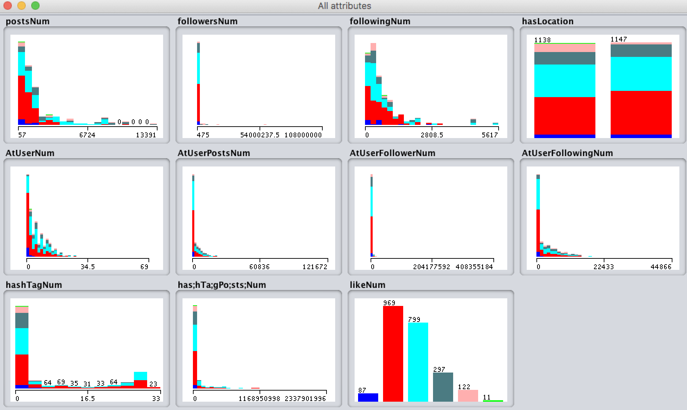

Contributors

Jiahua Chen
jiahuachen2018@u.northwestern.edu

Jennifer Liu
jenniferliu2018@u.northwestern.edu

Glenn Xu
ruoguxu2018@u.northwestern.edu
Want to see how you can predict popularity of your Instagram posts?
Learn moreIn the past decade, the amount of internet users has increased rapidly, replacing other traditional forms of media and entertainment with a skyrocketing trend among all ages known as social media. Specifically, social media is a website or application that enables users to create and share content or to participate in social networking, which is the form of communication through social media. With social media capturing the public’s attention, as many as 65% of American adults use social networking sites.
Among the many social media applications, Instagram, released in 2010, grows quickly and currently has become one of the most popular ones in the US. As a photo and video-sharing social networking service, it allows users to upload photos and videos to the service, which can be edited with various filters and organized with tags and location information. Users are able to browse other users' content by tags and locations, and view trending content as well. Users can also "like" photos and follow other users to add their content to a feed.
Specifically, many people have started to view the likes they receive for the posts as a major measurement of their personal influence and even their success in social interactions. As a result, as more and more people pay attention to how many likes they may receive for each post, they have always been looking for a program that would do this job for them, which would take their past posting information and make predictions about the upcoming ones. Consequently, our group decides to take on this quest and utilize the innovative machine learning knowledge that we acquired in the 349 course to build a program for this purpose.
We have written a web crawler based on Selenium to get data from Instagram. Throughout the project, we collected 2285 data points for building the model.
Specifically, the data includes 10 attributes and 1 label.
Attributes:
Label: the number of likes received for the post
Before doing the training, we processed the data in various ways, including categorizing the number of likes from the raw numbers to 6 categories using log10 (class 0: 1-9 likeness; class 1: 10~99 likeness; class 2: 100~999 likeness; etc.). We used all the data to train the model and 10-fold cross validation to validate the model.
The following figure shows the distribution of the attributes and label from the dataset.
We can observe that the shapes of most of our attributes are close to unimodal and approximately Gaussian Distribution. If we go further and observe the shapes of each class for each attributes, we also see that they look similar to Gaussian Distribution with different mean values and variance values. Therefore, the algorithms can make use of this feature to classify the dataset. The attribute “followingNum” has the most obvious difference of Gaussian distributions between class 2 and class 3. This attribute will be one of the most important features for training.
The distribution of label is also close to Gaussian Distribution. Most posts from our dataset have 10 to 99 likes or 100 to 999 likes. They are class 1 and class 2, correspondingly.
After getting the data from our web crawler and conducting the preprocesses, all the data were put into a csv file. This file was then loaded into Weka to train using different models via 10 fold cross validation. (Please see the result section below for details on the models used and the results.
We trained our dataset with 16 models from Weka. The accuracy result is listed in the table below.
| Algorithm | Accuracy | Precision | Recall | F-Measure |
|---|---|---|---|---|
| Filtered Classifier | 81.53% | 0.808 | 0.815 | 0.810 |
| Bagging | 81.27% | 0.806 | 0.813 | 0.807 |
| Classification Via Regression | 80.44% | 0.798 | 0.804 | 0.797 |
| BayesNet | 79.87% | 0.804 | 0.799 | 0.800 |
| Random Forest | 79.69% | 0.793 | 0.797 | 0.795 |
| J48 | 79.52% | 0.794 | 0.794 | 0.793 |
| Random Tree | 75.62% | 0.760 | 0.756 | 0.758 |
| Logistic | 72.47% | 0.703 | 0.725 | 0.702 |
| IBK | 72.21% | 0.722 | 0.722 | 0.722 |
| Multilayer Perceptron | 64.38% | 0.640 | 0.644 | 0.625 |
| AdaBoost M1 | 63.46% | N/A | 0.653 | N/A |
| Decision Stump | 63.46% | N/A | 0.635 | N/A |
| Stacking | 42.41% | N/A | 0.424 | N/A |
| Vote | 42.41% | N/A | 0.424 | N/A |
| ZeroR | 42.41% | N/A | 0.424 | N/A |
| Naive Bayes | 34.35% | 0.525 | 0.341 | 0.371 |
As we can see from the table, ZeroR has an accuracy of 42.41%. ZeroR uses the majority class (class 2) as the final class. From the dataset distribution above, we know that class 2 contains roughly 40% of all data points, which is matched with the accuracy of ZeroR.
The model with the highest accuracy is Filtered Classifier, which has an accuracy of 81.53%. Filtered Classifier is 92.24% better than ZeroR given this dataset. We set the classifier of Filtered Classifier to J48. From the table, we observe that J48 achieves an accuracy slightly lower than Filtered Classifier. We think the reason is that during the training process of Filter Classifier, the model can pick out the best attributes and the best samples. Since our data set has some kind of unbalance, the filter can decrease bias and unbalance and improve the performance.
Overall the accuracy of J48 and Classification Via Regression are relative great. This is because the attribute values for each class are relatively different. It matches with what we mentioned before about how the shape of each class for each attribute is close to Gaussian Distribution with different mean and variance values. From the report of J48, we can find the attribute “followingNum” is the first splitter node. This is because this attribute has the most obvious difference between class 2 and class 3 (two majority classes) that we mentioned in previous part.
Comparing the accuracies of Bagging and AdaBoost M1, we can see that Bagging achieves a better performance than AdaBoost M1. Both Bagging and AdaBoost M1 try to combine all the weak learners. However, Bagging trained each weak learner separately with random samples while AdaBoost M1 trained the weak learner based on previous weak learner. Most of the time, AdaBoost M1 can achieve a better performance than Bagging on training dataset but is easier to overfit. In our project, we think AdaBoost achieves a relatively worse performance than Bagging due to overfitting.
The accuracy of IBK can reflect the similarity of data points. A good performance can prove that data points with similar attributes values probably have the same labels. But this algorithm didn’t consider the weight of different attributes. Its relatively worse accuracy as compared to J48 indicates that some attributes are more important than the rest.
The performance of each class of J48 is shown below.
| Class | Precision | Recall | F-Measure |
|---|---|---|---|
| 1 | 0.581 | 0.494 | 0.534 |
| 2 | 0.858 | 0.856 | 0.857 |
| 3 | 0.769 | 0.844 | 0.805 |
| 4 | 0.753 | 0.606 | 0.672 |
| 5 | 0.725 | 0.713 | 0.719 |
| 6 | 0.400 | 0.364 | 0.381 |
From the table above, we can see that the performance of different classes is unbalanced. Class 2 achieves the best performance while Class 6 achieves the worst performance. We think this is probably caused by the unbalanced distribution of data set. From the distribution of data set, we can observe that Class 2 contains more than 40% of all data points while Class 6 has only 11 samples.
jiahuachen2018@u.northwestern.edu
jenniferliu2018@u.northwestern.edu
ruoguxu2018@u.northwestern.edu